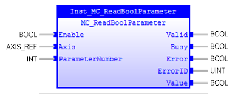

MC_ReadBoolParameter
Reads the specified axis’ parameter of type BOOL.

Description:
This function block returns the value of the specified
parameter which specified with parameter number. When ‘Enable’ changes to TRUE,
‘Valid’ will changes to TRUE and ‘Value’ will output the value of the parameter
if no error occurs. This Function Block does not affect the PLCopen machine
state. It can work in any states.
Make sure the input and output parameters are of data type
indicated in the table below.
Use
MC_ReadParameter
for non-BOOL
axis’s parameters.
Inputs/Outputs:
|
Name
|
Data Type
|
Description
|
|
INPUTS
|
|
Enable
|
BOOL
|
Get the value of the parameters
continuously while enabled.
|
|
Axis
|
AXIS_REF
|
Reference to the axis
|
|
ParameterNumber
|
INT
|
Parameter
number of the specified parameter.
Refer
to
Parameters
.
|
|
OUTPUTS
|
|
Valid
|
BOOL
|
A
valid output is available on the output ‘Value’.
|
|
Busy
|
BOOL
|
The
FB is not finished and new output value is to be expected.
|
|
Error
|
BOOL
|
Signals
that an error has occurred within the FB.
|
|
ErrorID
|
UINT
|
Error
number. Non zero when there is an error.
|
|
Value
|
LREAL
|
Value
of the specified parameter in the LREAL, if the data type is DINT, LINT,
REAL, the output will be explicit converted to LREAL.
|
Examples:
Example 1:
|
 Example
Example
|
|
(*Example for
MC_ReadBoolParameter *)
ParNum :=
10000
;
(* PARBOOLTEST *)
inst_ReadBoolParameter(Axis:=Axis0Ref,Enable:=bEnable,ParameterNumber:=ParNum);
bValid := inst_ReadBoolParameter.Valid;
bBusy := inst_ReadBoolParameter.Busy;
bError := inst_ReadBoolParameter.Error;
ErrorId := inst_ReadBoolParameter.ErrorID;
IF
bValid
THEN
bValue := inst_ReadBoolParameter.Value;
END_IF
;
|
See also:
MC_ReadParameter
,
Parameters